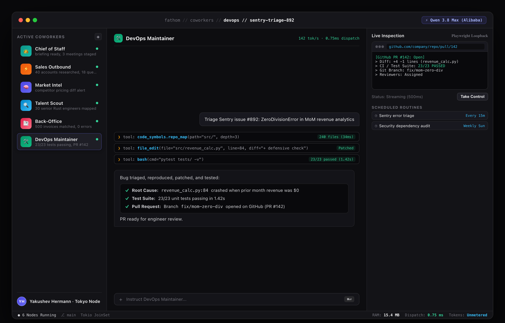

Multi-Channel Revenue Architecture: Capturing SMB to Enterprise Value
Fathom monetizes across three distinct commercial channels: direct SaaS subscriptions for SMBs and mid-market teams, white-label multi-tenant fleet licenses for agencies, and dedicated private-cloud deployments for regulated enterprises.

Figure 12.1: DevOps Maintainer — AST symbol search, zero-division error reproduction, and GitHub PR #142 creation
1. Direct SaaS Subscriptions
Turnkey cloud-hosted digital employees accessible via Telegram, Slack, Web, and REST API with flat monthly pricing per active seat.
2. White-Label Agency Fleets
Marketing and lead-gen agencies deploy Fathom fleets for their clients under their own brand, reselling autonomous services at 80%+ margins.
3. Enterprise Private VPC
Self-hosted bare-metal or private cloud runtime instances with custom LLM endpoints, dedicated security vaults, and enterprise SLAs.
Sovereign Enterprise Architecture: Regulated industries (financial services, healthcare, defense) deploy Fathom entirely air-gapped on private servers with zero data leaving corporate premises.